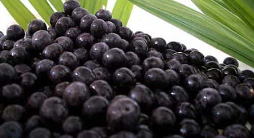
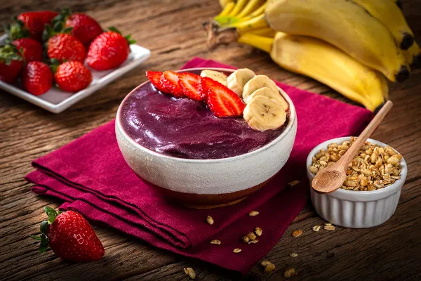

A origem do açaí
O açaí é um fruto brasileiro cultivado predominantemente na região amazônica. Com cor escura, que vai do roxo ao preto, o fruto arredondado nasce em cachos e, na maioria das vezes, em locais com solos mais úmidos ou alagados. Mesmo sendo um fruto característico da Região Norte do país, o açaí se popularizou nacionalmente e é utilizado de diversas formas na culinária brasileira, já que possui muitas propriedades nutricionais.
A palmeira do açaí pode atingir mais de 20 metros de altura, e o fruto é formado em cachos. Cada palmeira costuma ter cerca de quatro cachos por ano e cada um deles pode produzir uma quantidade aproximada de três a seis quilos do fruto.
A tradicional polpa do açaí é feita com o desmembramento do caroço e da polpa. A quantidade de polpa em cada fruto costuma ser pouca, já que o caroço é proporcionalmente grande. Para a produção da polpa que é consumida pelas pessoas, há uma série de etapas. O fruto passa por uma higienização e desintoxicação. Depois disso, a polpa é extraída do caroço, batida até chegar à consistência ideal e, em seguida, congelada para manter sua conservação. Na maioria dos locais em que o açaí é comercializado, é comum adicionar quantidades de xarope de guaraná, adoçantes e açúcares para que ele tenha um sabor mais adocicado. Recomenda-se que, após a colheita, a polpa seja retirada em, no máximo, um dia para que o açaí não perca suas propriedades.
Benefícios do açaí
A cor forte do açaí também traz consigo uma importante característica que beneficia a saúde. A casca do fruto possui antocianina, substância antioxidante que ajuda a combater as células mortas do organismo, refletindo na melhora da pele e aparência. Pela quantidade de fibras, o açaí também contribui para a melhora do funcionamento intestinal, o que é fundamental para o bom funcionamento do organismo. Para finalizar, o açaí também está presente na rotina alimentar de muitos atletas, levando em consideração que a presença dos minerais ferro e cálcio ajuda no fortalecimento dos ossos e articulações, além de contribuir com as funções energéticas e cardiovasculares do corpo.